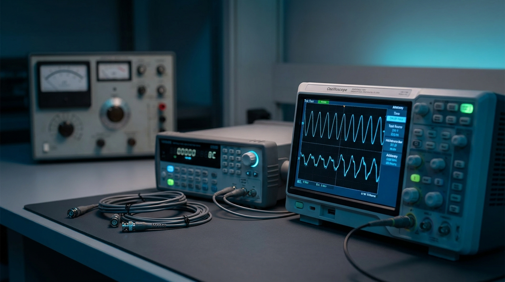
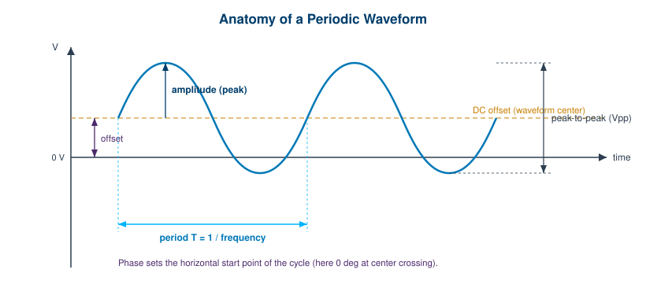
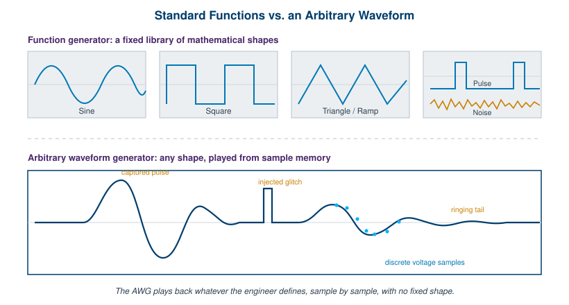

Section 1 · Foundations of Arbitrary Waveform Generation
Chapter 1: Signal Generation Basics

Every test starts with a stimulus. Before you can measure how a circuit, a receiver, or a whole system behaves, you have to feed it something to respond to. That something is a signal, and the instrument that produces it on demand is a signal generator. This first section builds the foundation under everything that follows in the book. We start with the basics of what a signal actually is and why an engineer would want to generate an arbitrary one rather than a textbook sine.
Chapter 1 defines the vocabulary: amplitude, frequency, period, phase, offset, and the difference between a handful of standard shapes and a true arbitrary waveform built from samples. Chapter 2 opens the box and walks through how an arbitrary waveform generator turns stored numbers into a clean analog output, from sample memory through the digital-to-analog converter and reconstruction filter. Chapter 3 then gives you the specifications that matter when you compare instruments, so a datasheet stops being a wall of numbers and becomes a tool you can read.
Taken together, these three chapters are the mental model. Get them right and the later material on sampling theory, sequencing, modulation, and applications will land as refinement rather than revelation. You do not need a signal processing degree to follow along. You need curiosity about where the waveform comes from and a willingness to think in both the time domain and, occasionally, the frequency domain.
Signal generation is one of the oldest jobs in electronics, and one of the few that has only gotten more interesting with age. The first oscillators hummed out a single tone for testing telephone lines and radio receivers. Today an arbitrary waveform generator can replay a captured radar return, synthesize a 5G uplink, or stress a power rail with a glitch sequence measured in picoseconds. The underlying idea has not changed. You define a voltage that varies over time, and an instrument produces it faithfully. What has changed is how much freedom you have in defining that voltage.
1.1 What Is a Waveform?
A waveform is a description of how a voltage changes over time. Plot voltage on the vertical axis and time on the horizontal axis, and the line you trace is the waveform. That line is the whole story. Everything an engineer cares about, from the pitch of an audio tone to the bit pattern in a serial link, lives in the shape of that curve.
Most waveforms an instrument produces are periodic, meaning the same shape repeats over and over. A periodic waveform can be pinned down by a small set of parameters, and learning these is the price of admission to the rest of the field.
- Amplitude. How far the waveform swings away from its center. It can be quoted as a peak value, a peak-to-peak value (the full distance from the lowest point to the highest), or an RMS value. Always check which one a datasheet means.
- Frequency. How many complete cycles occur per second, measured in hertz. A 1 kHz tone completes one thousand cycles every second.
- Period. The time for one complete cycle, equal to one divided by the frequency. The 1 kHz tone has a period of one millisecond.
- Phase. Where in its cycle the waveform starts, expressed in degrees or radians. Phase matters most when you compare two signals, since a phase difference tells you how they line up in time.
- DC offset. A constant voltage added to the whole waveform, shifting it up or down. A signal can swing around zero volts or around any offset you choose.

A short menu of standard functions covers a surprising amount of everyday work. The sine wave is the cleanest single-frequency tone and the natural test signal for anything frequency dependent. The square wave swings hard between two levels and is the workhorse for clocking and digital edges. The triangle and the ramp rise and fall in straight lines, useful for sweeps and for driving anything that wants a linear voltage. A pulse is a single excursion with a defined width, the basic unit of timing. Noise is a deliberately random signal, handy for stressing a system across a band of frequencies at once. A function generator typically offers exactly this set, and for routine bench work it is plenty.
An arbitrary waveform throws the menu out. Instead of selecting a shape, you define one. You hand the instrument a list of voltage values, one after another, and it plays them back in order at a fixed rate. Because any curve can be approximated by a dense enough sequence of points, this means any signal a system might ever encounter can be represented as a sequence of voltage samples over time. A captured antenna signal, a deliberately distorted clock, a sensor output with a fault injected at one specific moment: all of them reduce to a table of numbers that the instrument reproduces on command. That is the core idea the rest of this book builds on.
Engineer's corner. Amplitude confusion causes more bench mistakes than almost anything else. A generator set to "1 volt" might mean 1 volt peak, 1 volt peak-to-peak, or 1 volt RMS, and the three differ by more than a factor of two. Worse, the number assumes a load. Many generators are calibrated into 50 ohms and will deliver double the displayed amplitude into a high-impedance input. When a measurement is off by exactly 2x or 2.8x, suspect the amplitude reference before you suspect the instrument.
1.2 Why Generate Arbitrary Waveforms?
The value of an arbitrary waveform is that it can mimic the real world. Real signals are messy. They carry noise, drift, overshoot, and the fingerprints of whatever produced them. A clean sine from a function generator tells you how a device handles an ideal input, which is useful but incomplete. To know how a device behaves in the field, you have to feed it something that looks like the field. An arbitrary waveform generator (AWG) lets you build exactly that.
Several recurring needs drive engineers toward arbitrary generation:
- Replaying captured signals. Record a real-world waveform on an oscilloscope or digitizer, load the samples into an AWG, and you can reproduce that exact event on the bench as many times as you like. A field failure becomes a repeatable lab condition.
- Generating impairments. Add jitter to a clock, dropouts to a data stream, or a precisely timed glitch to a power rail. Real systems must survive imperfect inputs, and an AWG manufactures those imperfections on demand.
- Radar and electronic warfare emulation. Synthesize pulse trains, chirps, and complex threat scenarios to test receivers without flying anything. The same instrument can play a benign pulse or a dense, deceptive emitter environment.
- Communications baseband. Produce the I and Q signals behind a modulated carrier so a transmitter or receiver can be exercised with realistic symbols, framing, and channel effects.
- Sensor simulation. Stand in for a sensor that is expensive, fragile, or not yet built. The AWG plays the voltage the real sensor would produce, letting downstream electronics be developed in parallel.
- Device stress testing. Push a part to its margins with worst-case patterns, then hold it there to find where it breaks.
- Repeatability for automated test. A production line needs the same stimulus on every unit, every time. An AWG plays an identical waveform indefinitely, which is what makes pass/fail limits meaningful.

The contrast with a function generator is worth making sharp. A function generator builds its output from circuitry tuned to produce specific mathematical shapes. You choose sine or square or ramp, set the parameters, and that is the menu. An arbitrary waveform generator has no fixed shapes. It reads voltage samples from memory and pushes them through a fast digital-to-analog converter, so the only limit on the output is what you can store and how fast you can play it back. A good AWG can still produce all the standard functions, since a sine is just one more table of numbers, but it is not limited to them. That single architectural difference, fixed circuit versus memory playback, is the line between the two instrument classes.
| Attribute | Function Generator | Arbitrary Waveform Generator | Vector Signal Generator |
|---|---|---|---|
| Output defined by | Built-in shape circuits | Voltage samples in memory | Baseband I/Q on an RF carrier |
| Available shapes | Fixed menu (sine, square, ramp, pulse, noise) | Any shape that fits in memory | Modulated carriers, digital standards |
| Typical domain | Bench, audio, low RF | Baseband to wideband RF | RF and microwave carriers |
| Replay a captured signal? | No | Yes | Yes, as baseband |
| Best at | Quick, clean standard tones | Realistic, complex, custom stimulus | Carrier-based comms test |
A vector signal generator earns its place in that table because it solves a related but different problem. It takes a baseband description, often the same kind of I/Q data an AWG would play, and impresses it onto a high-frequency carrier for radio testing. Many modern test setups pair the two: an AWG or a vector source generates the baseband, and an upconverter places it where the radio lives. Knowing which instrument owns which job saves a lot of wasted effort.
1.3 A Brief History of Signal Generation
Signal generation is older than most of the electronics it now tests, which is another way of saying the field has had plenty of time to accumulate good ideas and a few stubborn habits. The story runs from a single hummed tone to instruments that update billions of samples per second, and the throughline is a steady trade of analog cleverness for digital flexibility.
The oscillator era. Early signal generators were oscillators, circuits that sustain a single frequency. A milestone arrived in 1939, when Bill Hewlett built a resistance-tuned audio oscillator using a light bulb to stabilize its amplitude. It was cheap, stable, and easy to tune, and it became the founding product of the company he started with David Packard. For decades the oscillator was the signal generator. If you wanted a different shape, you reached for a different circuit.
Analog function generators. By the 1950s and 1960s, engineers wanted more than a sine. Function generators answered with analog circuitry that could shape a single oscillation into a triangle, a square, or a ramp, and sweep its frequency on command. These instruments were elegant and fast, but every shape they produced had to be built from hardware. Adding a new waveform meant adding a new circuit. The flexibility ceiling was set by the parts list.
Direct digital synthesis. The first real break came in the 1970s and 1980s with direct digital synthesis, or DDS. Instead of tuning an analog oscillator, DDS steps through a stored table of sine values using a digital accumulator and feeds the result to a digital-to-analog converter. Frequency becomes a number you load into a register, so it can be set with extreme precision and changed instantly. DDS brought clean, agile tones and phase-continuous switching, and it remains the heart of many function generators today.
Memory-based AWGs. DDS still assumes a sine. The arbitrary waveform generator drops that assumption. As fast digital-to-analog converters and deep memory became affordable, it became practical to store any sequence of samples and clock them out at high speed. The shape was no longer wired into the instrument. It was data. Early AWGs were modest in speed and memory, but the principle scaled with the same semiconductor economics that drove everything else, and sample rates and memory depths climbed steadily.
The instruments of today. Modern arbitrary waveform generators reach multi-gigasample-per-second update rates with deep memory and resolution to match. They synthesize radar scenarios, drive control pulses for quantum experiments, and produce the wideband baseband behind 5G and emerging 6G research. The job is the same one Hewlett's oscillator did, define a voltage over time, but the freedom in that definition is now nearly total.
Pro tip. When you evaluate any signal source, ask first whether you need a fixed shape generated cleanly or an arbitrary shape generated faithfully. The two goals pull instrument design in different directions. A DDS-based function generator wins on spectral purity for a pure tone. A memory-based AWG wins the moment your stimulus stops being a textbook shape. Match the tool to the signal, not to the brochure.
Where Berkeley Nucleonics fits. BNC was founded in 1963, building fast-risetime pulse generators for nuclear research and based in San Rafael, California. That origin is more than trivia. Fast pulse generation is a discipline of precise edges and exact timing, the same precision that a high-performance arbitrary waveform generator demands when it places a transition within picoseconds. The lineage runs straight from those early pulse instruments into a modern AWG family that spans entry-level benchtop units through multi-gigasample-per-second systems. The chapters ahead use that family for concrete examples, always pointing you to the current datasheet at berkeleynucleonics.com to confirm the exact numbers.
Check Your Understanding
Five quick questions on this chapter. Your answers save on this device.